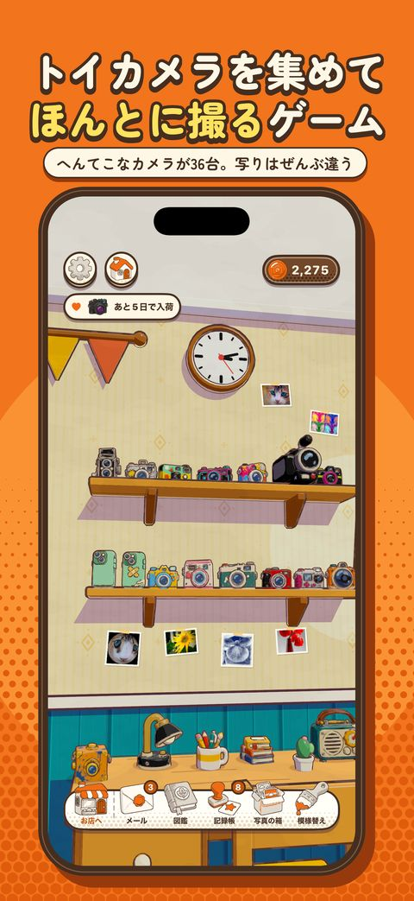
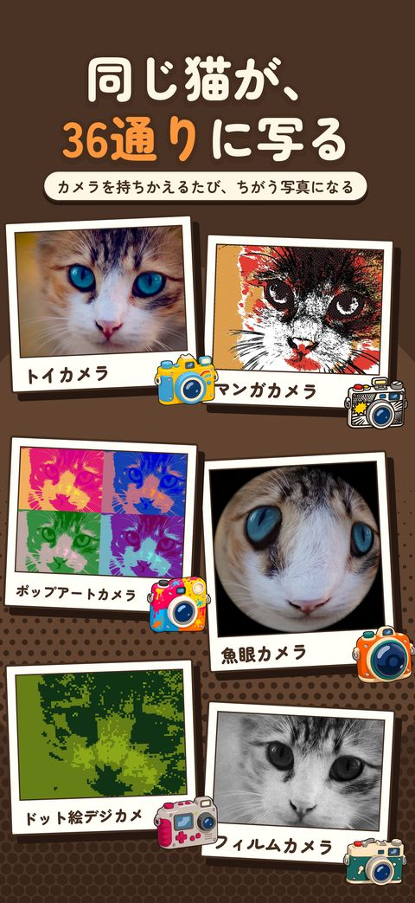
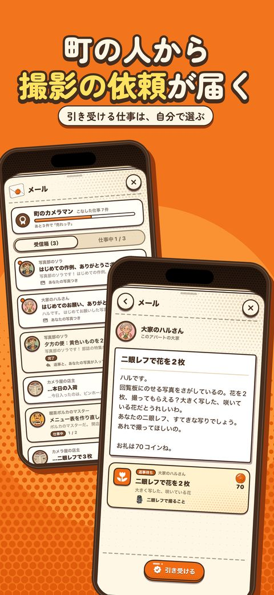
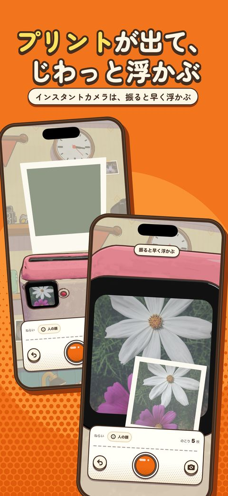

ABOUT
トイカメラを集めて、
ほんとに撮るゲーム。
部屋の棚からカメラを手に取り、ファインダーをのぞく。そこに映るのは、あなたの iPhone が見ている景色です。赤だけ写る、ドット絵になる、マンガになる、まるく歪む。36台のカメラは、写りも仕組みもぜんぶ違います。町の人から届く撮影の依頼をこなしてコインを稼ぎ、お店で次の1台を迎えましょう。




広告について
広告は、お店で現像中のフィルムを急いで仕上げてもらうときに、自分で選んで見る動画だけです（Google AdMob）。撮影中に割り込む広告や、画面に出続ける広告はありません。広告を見なくても、待てば仕上がります。
写真は、端末の中だけ
カメラの映像と撮った写真は、iPhone の外へ出しません。写っているものの見分けも iPhone の中で行います。課金とアカウント登録はありません。